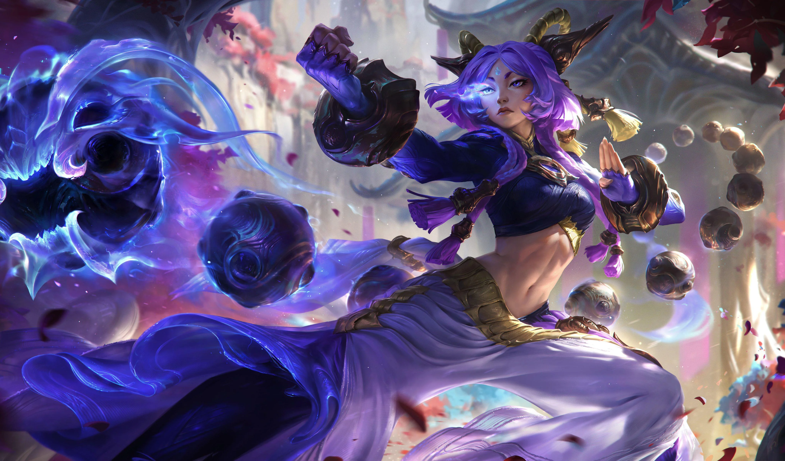

Una antigua acólita Kinkou y Puño de la Sombra, Yunara se convirtió en protectora de Jonia tras sellar
un pacto con un espíritu que más tarde resultó ser un Darkin. Como consecuencia de ese juramento, pasó
siglos en el reino espiritual, donde perfeccionó incansablemente sus habilidades con su arma, las Aion
Er’na, manteniéndose fiel a su propósito de preservar el equilibrio y erradicar toda forma de discordia.
🌀 Pasiva – Juramento a las Tierras Primigenias
Los golpes críticos de Yunara infligen daño mágico adicional además de su daño normal.
⚔️ Q – Cultivo del Espíritu
Pasiva: Cada ataque genera acumulaciones de Unleash. Atacar campeones o crits otorgan más cargas.
Activa: Al tener el máximo de cargas, Yunara puede activar la Q para aumentar su velocidad de ataque.
Hacer que sus ataques inflijan daño adicional y salpiquen a enemigos cercanos.
Esta habilidad es clave para su daño sostenido y funciona automáticamente mientras su R está activa.
🌀 W – Arco de Justicia / Arco de Ruina
Forma básica: Yunara lanza una esfera giratoria que inflige daño y ralentiza a los enemigos en su camino
extendiéndose al final.
Durante su Ultimate: Se transforma en un rayo láser que atraviesa a los enemigos, inflige daño y los
ralentiza.
🏃 E – Pasos de Kanmei / Sombras Incorpóreas
Forma básica: Yunara recibe un impulso de velocidad de movimiento, lo que le ayuda a perseguir, escapar
o esquivar habilidades.
Durante su Ultimate: Esta habilidad se convierte en un dash corto, permitiéndole reposicionarse
rápidamente o atravesar terrenos finos.
🌟 R – Superarse a Sí Misma / Trascender
Yunara entra en un estado trascendental por varios segundos que potencia todas sus habilidades básicas:
Su Q se activa automáticamente y dura toda la R.
Su W cambia a su forma más poderosa (Arco de Ruina).
Su E se transforma en un dash con reutilización.
En este estado es más fuerte en combates y peleas de equipo.
